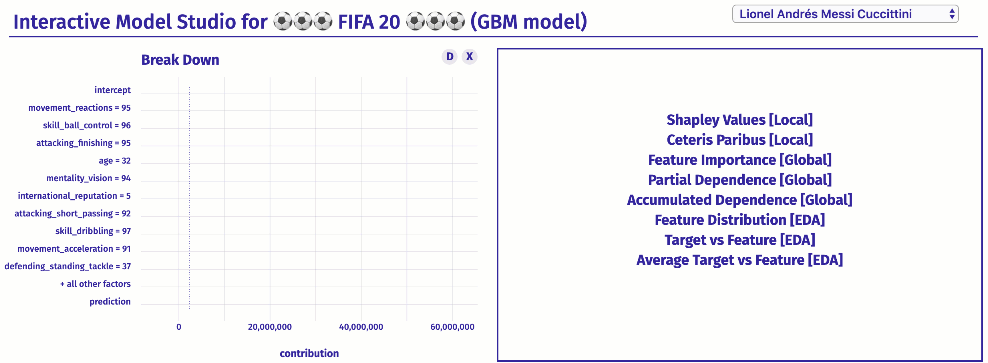
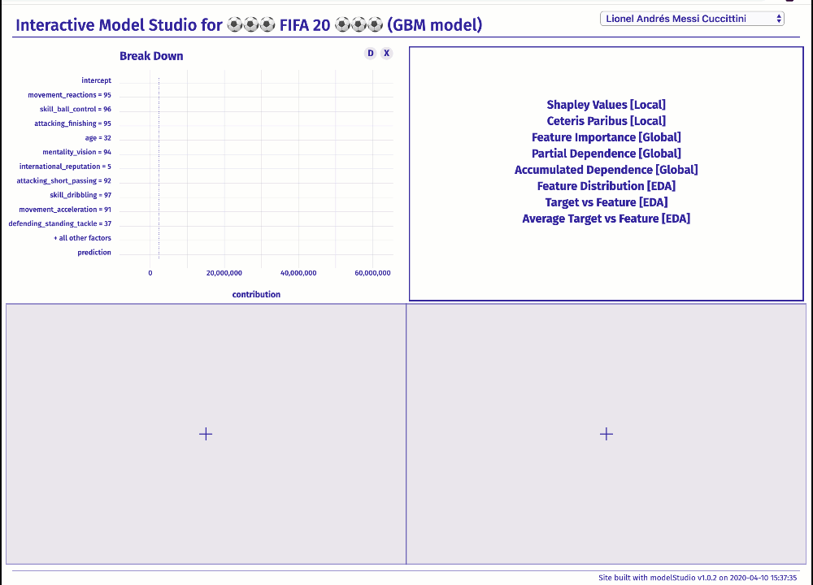

Overview
The modelStudio package automates the Explanatory Analysis of Machine Learning predictive models. It generates advanced interactive model explanations in the form of a serverless HTML site with only one line of code. This tool is model agnostic, therefore compatible with most of the black box predictive models and frameworks (e.g. mlr/mlr3, xgboost, caret, h2o, parsnip, tidymodels, scikit-learn, lightgbm, keras/tensorflow).
The main modelStudio() function computes various (instance and dataset level) model explanations and produces a customisable dashboard, which consists of multiple panels for plots with their short descriptions. Easily save the dashboard and share it with others. Tools for Explanatory Model Analysis unite with tools for Exploratory Data Analysis to give a broad overview of the model behavior.
explain COVID-19 R & Python examples More Resources FAQ & Troubleshooting

The modelStudio package is a part of the DrWhy.AI universe.
Installation
# Install from CRAN:
install.packages("modelStudio")
# Install the development version from GitHub:
devtools::install_github("ModelOriented/modelStudio")Simple Demo
library("DALEX")
library("modelStudio")
# fit a model
model <- glm(survived ~., data = titanic_imputed, family = "binomial")
# create an explainer for the model
explainer <- explain(model,
data = titanic_imputed,
y = titanic_imputed$survived,
label = "Titanic GLM")
# make a studio for the model
modelStudio(explainer)Save the output in the form of a HTML file - Demo Dashboard.

R & Python Examples more
The modelStudio() function uses DALEX explainers created with DALEX::explain() or DALEXtra::explain_*().
# packages for the explainer objects
install.packages("DALEX")
install.packages("DALEXtra")mlr dashboard
Make a studio for the regression ranger model on apartments data.
code
# load packages and data
library(mlr)
library(DALEXtra)
library(modelStudio)
data <- DALEX::apartments
# split the data
index <- sample(1:nrow(data), 0.7*nrow(data))
train <- data[index,]
test <- data[-index,]
# fit a model
task <- makeRegrTask(id = "apartments", data = train, target = "m2.price")
learner <- makeLearner("regr.ranger", predict.type = "response")
model <- train(learner, task)
# create an explainer for the model
explainer <- explain_mlr(model,
data = test,
y = test$m2.price,
label = "mlr")
# pick observations
new_observation <- test[1:2,]
rownames(new_observation) <- c("id1", "id2")
# make a studio for the model
modelStudio(explainer, new_observation)xgboost dashboard
Make a studio for the classification xgboost model on titanic data.
code
# load packages and data
library(xgboost)
library(DALEX)
library(modelStudio)
data <- DALEX::titanic_imputed
# split the data
index <- sample(1:nrow(data), 0.7*nrow(data))
train <- data[index,]
test <- data[-index,]
train_matrix <- model.matrix(survived ~.-1, train)
test_matrix <- model.matrix(survived ~.-1, test)
# fit a model
xgb_matrix <- xgb.DMatrix(train_matrix, label = train$survived)
params <- list(max_depth = 3, objective = "binary:logistic", eval_metric = "auc")
model <- xgb.train(params, xgb_matrix, nrounds = 500)
# create an explainer for the model
explainer <- explain(model,
data = test_matrix,
y = test$survived,
label = "xgboost")
# pick observations
new_observation <- test_matrix[1:2, , drop=FALSE]
rownames(new_observation) <- c("id1", "id2")
# make a studio for the model
modelStudio(explainer, new_observation,
options = ms_options(margin_left = 140))The modelStudio() function uses dalex explainers created with dalex.Explainer().
:: package for the Explainer object
pip install dalex -UUse pickle Python module and reticulate R package to easily make a studio for a model.
# package for pickle load
install.packages("reticulate")scikit-learn dashboard
Make a studio for the regression Pipeline SVR model on fifa data.
code
First, use dalex in Python:
# load packages and data
import dalex as dx
from sklearn.model_selection import train_test_split
from sklearn.pipeline import Pipeline
from sklearn.preprocessing import StandardScaler
from sklearn.svm import SVR
from numpy import log
data = dx.datasets.load_fifa()
X = data.drop(columns=['overall', 'potential', 'value_eur', 'wage_eur', 'nationality'], axis=1)
y = log(data.value_eur)
# split the data
X_train, X_test, y_train, y_test = train_test_split(X, y)
# fit a pipeline model
model = Pipeline([('scale', StandardScaler()), ('svm', SVR())])
model.fit(X_train, y_train)
# create an explainer for the model
explainer = dx.Explainer(model, data=X_test, y=y_test, label='scikit-learn')
# pack the explainer into a pickle file
explainer.dump(open('explainer_scikitlearn.pickle', 'wb'))Then, use modelStudio in R:
# load the explainer from the pickle file
library(reticulate)
explainer <- py_load_object("explainer_scikitlearn.pickle", pickle = "pickle")
# make a studio for the model
library(modelStudio)
modelStudio(explainer, B = 5,
options = ms_options(margin_left = 160))lightgbm dashboard
Make a studio for the classification Pipeline LGBMClassifier model on titanic data.
code
First, use dalex in Python:
# load packages and data
import dalex as dx
from sklearn.model_selection import train_test_split
from sklearn.pipeline import Pipeline
from sklearn.preprocessing import StandardScaler, OneHotEncoder
from sklearn.impute import SimpleImputer
from sklearn.compose import ColumnTransformer
from lightgbm import LGBMClassifier
data = dx.datasets.load_titanic()
X = data.drop(columns='survived')
y = data.survived
# split the data
X_train, X_test, y_train, y_test = train_test_split(X, y)
# fit a pipeline model
numerical_features = ['age', 'fare', 'sibsp', 'parch']
numerical_transformer = Pipeline(
steps=[
('imputer', SimpleImputer(strategy='median')),
('scaler', StandardScaler())
]
)
categorical_features = ['gender', 'class', 'embarked']
categorical_transformer = Pipeline(
steps=[
('imputer', SimpleImputer(strategy='constant', fill_value='missing')),
('onehot', OneHotEncoder(handle_unknown='ignore'))
]
)
preprocessor = ColumnTransformer(
transformers=[
('num', numerical_transformer, numerical_features),
('cat', categorical_transformer, categorical_features)
]
)
classifier = LGBMClassifier(n_estimators=300)
model = Pipeline(
steps=[
('preprocessor', preprocessor),
('classifier', classifier)
]
)
model.fit(X_train, y_train)
# create an explainer for the model
explainer = dx.Explainer(model, data=X_test, y=y_test, label='lightgbm')
# pack the explainer into a pickle file
explainer.dump(open('explainer_lightgbm.pickle', 'wb')) Then, use modelStudio in R:
# load the explainer from the pickle file
library(reticulate)
explainer <- py_load_object("explainer_lightgbm.pickle", pickle = "pickle")
# make a studio for the model
library(modelStudio)
modelStudio(explainer)Save & Share
Save modelStudio as a HTML file using buttons on the top of the RStudio Viewer or with r2d3::save_d3_html().

Citation
If you use modelStudio, please cite our JOSS article:
@article{modelStudio,
author = {Hubert Baniecki and Przemyslaw Biecek},
title = {{modelStudio}: Interactive Studio with Explanations for {ML} Predictive Models},
doi = {10.21105/joss.01798},
url = {https://doi.org/10.21105/joss.01798},
year = {2019},
month = {Nov},
volume = {4},
number = {43},
pages = {1798},
publisher = {The Open Journal},
journal = {Journal of Open Source Software}
}More Resources
Theoretical introduction to the plots: Explanatory Model Analysis: Explore, Explain and Examine Predictive Models
Vignettes: modelStudio - perks and features and modelStudio - R & Python examples
Changelog: NEWS
Conference poster: MLinPL2019
A preprint of The Grammar of Interactive Explanatory Model Analysis